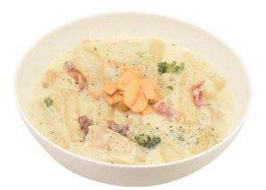
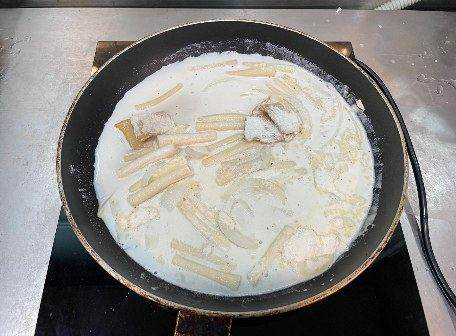
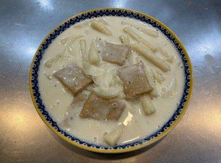
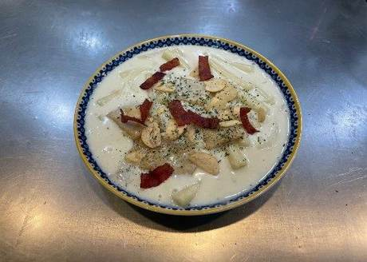
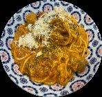

| 메뉴명 | 베이컨 크림떡볶이 |
|---|---|
| 판매가격 | 7,900원 |
| 원재료 | 아이센스 크림떡볶이, 미니새송이, 양파, 베이컨, 우유, 파슬리, 조랭이떡 |
| 사용 부자재 | 덮밥접시 |
| 메뉴특징 | 깊은 맛의 벌툰 크림소스와 우유, 베이컨이 들어있어 고소한 맛과 부드러운 풍미를 느낄 수 있는 크림떡볶이 |




중간중간 자주 저어 주지 않는다.
조리시간이 끝났지만 국물이 많을 경우, 30초~1분 정도 더 끓여서 국물 농도를 맞춰준다.